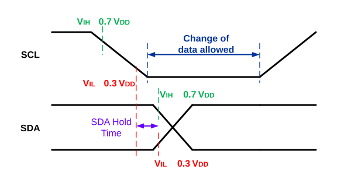

SDA hold time refers to the amount of time between the low threshold region of the falling edge of SCL (VIL ≤ 0.3 VDD) and either the low threshold region of the rising edge of SDA (VIL ≤ 0.3 VDD) or the high threshold region of the falling edge of SDA (VIH ≥ 0.7 VDD) (see Figure 37-3). If the SCL fall time is long or close to the maximum allowable time set by the I2C Specification, data may be sampled in the undefined Logic state between the 70% and 30% region of the falling SCL edge, leading to data corruption. The I2C module offers selectable SDA hold times, which can be useful to ensure valid data transfers at various bus data rates and capacitance loads.
